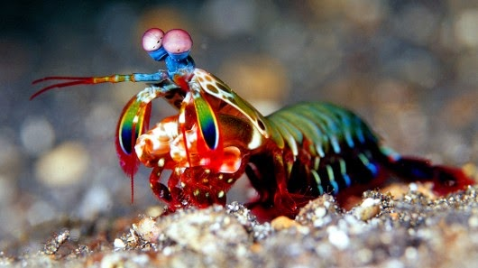
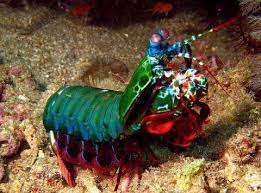

informações sobre o Stomatopoda:
nome científico: Odontodactylus scyllarus
- Reino: Animalia
- Filo: Crustacea
- Classe: Malacostraca
- Subclasse: Hoplocarida
- Ordem: Stomatopoda
- Familia: Odontodactylidae
- Género: Odontodactylus
- Espécie: O. scyllarus
Curiosidades:
- Ele consegue ver até 16 cores primárias.
Esses animais possuem o mais complexo sistema de visão de cores do mundo animal, pois enxergam 12 cores primárias, correspondentes aos 12 pigmentos distintos presentes em sua retina;

- Eles tem em media 18cm. que podem chegar até 40cm
"Tamanho não é documento"

- É um excelente boxeador ele consegue bater até 2.5 mil vezes seu peso em menos de 800 microsegundos.
Este nocaute equivale a um tiro de pistola calibre 22;

- Seus membros são tão poderosos que os cientistas estão estudando a estrutura de suas células.
Os estudos são para desenvolver novas armaduras para as tropas de combate;